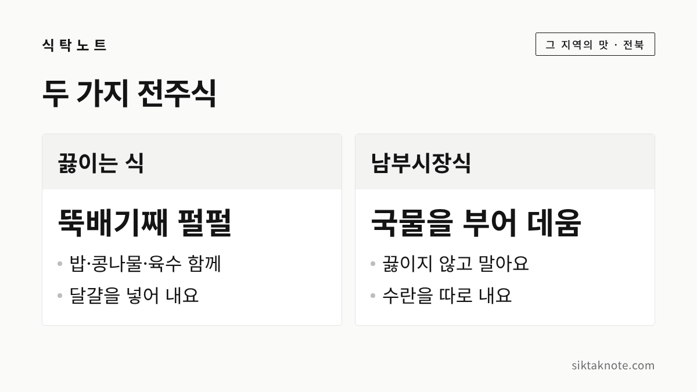
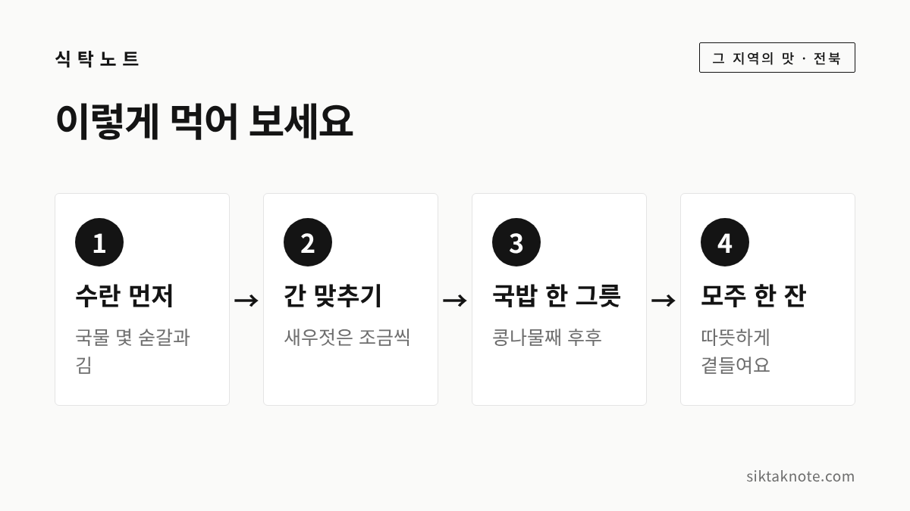

전주 콩나물국밥 이야기 — 남부시장식과 끓이는 식, 수란과 모주까지

3줄 요약
- 전주 콩나물국밥은 1929년 잡지 『별건곤』에 '탁백이국'이라는 이름으로 전주 명물로 소개된 음식입니다.
- 펄펄 끓여 달걀을 넣는 식과, 밥에 뜨거운 국물을 부었다 따라내며 데워 내는 남부시장식이 있어요.
- 수란과 모주를 곁들이는 게 전주식이고, 콩나물 맛이 좋은 이유로는 물과 기후가 자주 꼽힙니다.
아침에 찾는 전주의 한 그릇
전주 하면 비빔밥이 먼저 떠오르시죠. 그런데 전주 사람들이 아침에 더 자주 찾는 음식은 콩나물국밥이라고 하는데요. 한국민족문화대백과사전은 전주콩나물국밥을 '콩나물을 주재료로 한 해장국으로 상품화된 전주 지역의 국밥'이라고 설명합니다.
뜨거운 뚝배기에 아삭한 콩나물이 수북하고, 옆에는 수란 한 그릇과 모주 한 잔이 놓입니다. 소박한 상인데 먹는 방법과 곁들이는 것까지 이야깃거리가 꽤 많습니다. 오늘은 그 이야기를 차근차근 풀어 볼게요.

1929년 잡지에 실린 '탁백이국'
콩나물국밥은 오래전부터 전주 명물로 이름이 났습니다. 한국민족문화대백과사전에 따르면 일제강점기 잡지 『별건곤』 제24호(1929년 12월 1일)에 '전주명물 탁백이국'이 소개되었는데요. 평양의 어복장국, 서울의 설렁탕에 견줄 만한 명물이라는 평이었습니다. 설렁탕은 소고기로 맛을 내지만 탁백이국은 콩나물만으로 끓인다는 점이 눈에 띄었다고 해요.
그때 끓이는 법은 지금보다 훨씬 단순했습니다. 콩나물을 솥에 넣고 시래기를 조금 더해 푹 삶은 뒤, 마늘 양념을 조금 넣고 소금으로 간했다고 하죠. 아침 식전이나 자정이 넘어 탁백이 집을 찾아 텁텁한 막걸리를 마시고 국 한 주발에 밥을 곁들였는데, 이 셋을 합친 값이 5전이었다고 전합니다.
예전에는 맑은 국이었지만, 지금은 무와 대파, 멸치 같은 재료로 우린 육수가 기본이 되었습니다.

전주 콩나물은 왜 이름났을까
콩나물국밥 맛의 절반은 콩나물이라고들 하는데요. 전주 콩나물이 이름난 이유로는 물과 기후가 자주 꼽힙니다.
한국민족문화대백과사전은 전주에서 쥐눈이콩이라 부르는 서목태로 콩나물을 길렀다고 설명합니다. 콩나물은 물로만 기르는 것이라서, 같은 방법으로 길러도 맛이 다르다면 전주의 물이 좋다고 봐야 한다는 이야기가 있다고 소개하고 있어요. 전북 지역 신문인 전북일보 기사에서는 '전주의 기후와 수질이 콩나물 재배에 최적'이라고 썼고, 소설가 최명희가 『혼불』에서 전주 교동 묵샘골의 물맛이 콩나물 맛을 냈다고 쓴 대목도 소개했습니다. 다만 물과 기후가 맛을 만든다는 건 오래 전해 온 이야기이지, 과학적으로 확인된 결론은 아닙니다.
한국관광공사 대한민국 구석구석 기사에는 전주 콩나물을 콩과 물 외에는 아무것도 넣지 않고 기른다고 나옵니다. 이틀에 한 번 콩나물을 물에 담가 휘저어 섞어 주는데, 열을 식히고 고르게 자라게 하려는 방법이라고 해요. 백과사전에는 콩나물 길이가 5~6cm일 때 가장 맛있다고 알려져 있다는 설명도 있습니다.

끓이는 식과 남부시장식
전주 콩나물국밥은 크게 두 갈래로 나뉩니다.

하나는 뚝배기째 펄펄 끓여 내는 방식입니다. 대한민국 구석구석에 따르면 뚝배기에 밥과 삶은 콩나물, 썰이김치, 육수를 넣고 펄펄 끓인 뒤 달걀을 넣어 내는데요. 처음엔 무척 뜨겁지만 천천히 식으면서 구수한 맛이 난다고 해요. 삼백집이 이 방식으로 알려진 집입니다.
다른 하나가 남부시장식입니다. 밥과 삶은 콩나물, 썰이김치를 담고 뜨거운 육수를 부어 말아 내는 방식인데요. 펄펄 끓이지 않아서 너무 뜨겁지 않고, 맛이 개운하다는 게 특징입니다. 언론 보도에서는 뚝배기에 담은 밥에 끓는 육수를 부었다 따라내기를 여러 번 되풀이해 데우는 '토렴'으로 설명하기도 해요. 토렴을 하면 찬밥에 국물이 천천히 배어서 퍼지지도 딱딱하지도 않은 식감이 난다고 합니다.
남부시장식이 생긴 배경으로는 호남에서 손꼽히던 전주 남부시장에서 상인과 짐꾼들이 아침밥으로 즐겨 먹던 국밥이라는 이야기가 전해집니다. 바쁜 시장 사람들이 데지 않고 금방 먹을 수 있는 온도였던 셈이죠. 어느 쪽이 더 낫다기보다는 취향 차이인데요. 뜨겁고 진한 맛을 좋아하시면 끓이는 식, 개운하고 아삭한 맛을 좋아하시면 남부시장식을 고르시면 좋겠습니다.

따로 나오는 수란 한 그릇
전주에서 콩나물국밥을 시키면 작은 그릇에 담긴 수란이 함께 나오는 집이 많습니다. 수란은 달걀을 깨서 그릇째 뜨거운 물이나 국물에 띄워 살짝 익힌 것인데요. 한국민족문화대백과사전도 국물을 세게 끓이지 않는 집에서는 달걀을 수란으로 낸다고 설명합니다. 끓이는 식에서는 달걀이 국밥 안에 들어가고, 남부시장식에서는 수란이 따로 나온다고 기억하시면 쉬워요.
수란을 먹는 방법도 전해 오는 게 있습니다. 전북일보 기사에서는 수란에 국밥 국물을 몇 숟가락 떠 넣고, 김을 부숴 넣어 저은 뒤 마시듯 먹는다고 소개했어요. 국밥을 먹기 전에 먼저 먹으면 속을 달래 준다는 이야기도 함께 전해집니다. 이건 지역에서 내려오는 먹는 법이니, 편하신 대로 국밥에 넣어 드셔도 괜찮습니다.
모주 한 잔을 곁들이는 이유
한국민족문화대백과사전은 전주에서 콩나물국밥에 모주 한 잔을 곁들이면 맛이 완성된다고 한다고 적고 있는데요. 전주 모주는 막걸리에 생강, 대추, 감초, 칡, 계피 같은 재료를 넣고 끓인 술이라고 설명합니다. 대한민국 구석구석 기사에서는 흑설탕과 인삼 등을 더해 푹 끓여서 알코올이 거의 없다고 소개해요. 달큰한 맛이 국밥의 매운맛을 누그러뜨려 준다는 설명도 있습니다.
이름에 얽힌 이야기도 재미있습니다. 한국민족문화대백과사전 '모주' 항목에 따르면, 광해군 때 인목대비의 어머니가 제주도로 귀양 가서 술지게미를 다시 우린 막걸리를 만들어 섬사람들에게 싸게 팔았다고 해요. 그래서 '대비모주'라 부르다가 나중에 '모주'가 되었다는 이야기입니다. 다만 이 이야기의 출처로 흔히 드는 책에는 그런 내용이 없다는 지적도 지역 신문에 실린 적이 있어서, 전해 오는 이야기 정도로 들으시면 좋겠습니다.
알코올이 적다고 해도 술은 술이거든요. 운전하실 분은 마시지 않는 게 좋습니다.
이렇게 먹어 보세요
처음 가시는 분을 위해 순서를 정리해 봤는데요. 정해진 법은 아니고, 여러 자료에서 소개하는 먹는 법을 모은 것입니다.

곁들이는 반찬으로는 김치와 깍두기, 새우젓, 오징어젓 등이 나온다고 소개되어 있어요. 새우젓으로 간을 하는 분도 많은데, 국물 맛을 먼저 보고 조금씩 넣는 게 좋습니다. 어떤 집은 청양고추를 넣어 맵게 내고, 어떤 집은 삶은 오징어를 넣어 먹기도 합니다. 집집마다 조금씩 다른 맛을 비교해 보는 것도 전주 아침의 재미입니다.
전주에 간다면
대한민국 구석구석 기사에는 완산구 전주객사2길의 삼백집, 동문길의 왱이콩나물국밥, 화산천변2길의 현대옥이 소개되어 있습니다. 영업시간과 쉬는 날은 집마다 다르고 바뀔 수 있으니, 가시기 전에 꼭 확인하세요. 남부시장 쪽은 아침 일찍 문을 여는 집이 많다고 알려져 있어서, 이른 아침에 한 그릇 먹고 한옥마을을 걷는 순서도 좋을 것 같습니다.
다른 지역의 향토 음식 이야기가 궁금하시다면 진주냉면과 진주비빔밥 이야기도 함께 읽어 보세요. 진주비빔밥 글에 전주비빔밥과 견주어 본 대목도 있습니다. 집에서 콩나물을 사 두셨다면 콩나물 보관법도 도움이 될 것 같습니다.
이 글은 한국민족문화대백과사전, 한국관광공사 대한민국 구석구석, 지역 신문과 언론 보도에서 확인되는 내용을 바탕으로 썼어요. 2026년 10월 9일 기준입니다.